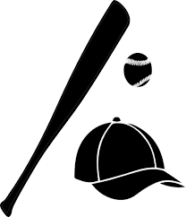

Ages 5-6
T-Ball
T-Ball provides an introduction to organized baseball and team play. Children are instructed on the fundamentals of baseball – hitting, throwing, catching, running and fielding – with a lot coaching and parent support in a fun game environment. Players start the season by batting off a stationary tee, but may have the opportunity to be pitched to by the coach before the end of the season. T-Ball games consist of 3 or 4 innings with each player getting a turn at bat. Game length will be no more than 90 minutes. During a game, there are SAFE’s and OUT’s on bases, but no scores are kept. Coaches are allowed on the field to assist the players with hitting and fielding. Suitable for both aspiring baseball and softball players (co-ed). If appropriate, 6 year old players who demonstrate the required level of skill and maturity may be assessed for Mini-Minors. It is also possible for 7 year old players to participate in T-Ball when appropriate.
|  | All players must have a glove and ideally their own batting helmet. Please make sure that your player's name is clearly marked on all items. Each player will receive a Beacon Hill Little League team t-shirt and hat at the start of the season. The team t-shirt becomes your uniform for the season. |
 |
Beacon Hill Little League is run entirely by volunteers. We are very grateful to those that volunteer to coach each season! If you would like to coach a team, please visit COACH REGISTRATION for more information. Teams will be selected to ensure a mix of ages and genders. When dividing our youngest players into teams at the T-Ball level, we make every effort to honour friend and coach requests to maintain a high level of enthusiasm for the game. |
 |
T-Ball players play on the lower field at Hollywood Park. Each team will generally practice one evening per week and have one game per week, usually on a Saturday or Sunday. |